Design Journal
Week 4
Design Journal
Junming He
Hochelaga Archipelago
Octomber 06, 2026
What I Worked On
This week, my main tasks were to explore different map styles, revise my previous opening idea, and further design the overall layout and user flow of the interactive map.
Exploring Map Styles and Revising the Opening Idea
I first collected different map references with different visual and color styles. I mainly looked at how they highlighted islands while still fitting the atmosphere of a museum exhibition. Based on these references, I started rethinking my previous opening idea. First, I decided not to outline or add overlay colors to every island. In my earlier idea, I wanted to use outlines to make each island stand out, but I found that when the map zooms out, smaller islands that are close to each other start to visually overlap and make the map feel crowded. I also decided not to use numbers to show the total number of islands. Since the Hochelaga Archipelago contains more than 200 islands, showing a number without being able to visually represent all of them clearly would make the number feel a bit unsupported and disconnected from what the user is seeing. Instead, I now want to select a few representative islands and mark them using points and labels. After the zoom-out animation is complete, lines can appear between these points to give users a sense that the islands are connected to one another. At the end of the opening, a short piece of text would explain that the Hochelaga Archipelago is made up of many islands and encourage users to continue exploring the relationships between them.
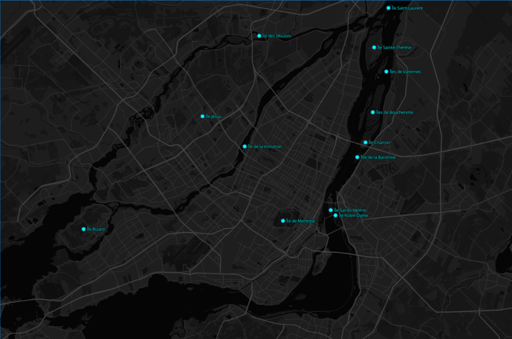
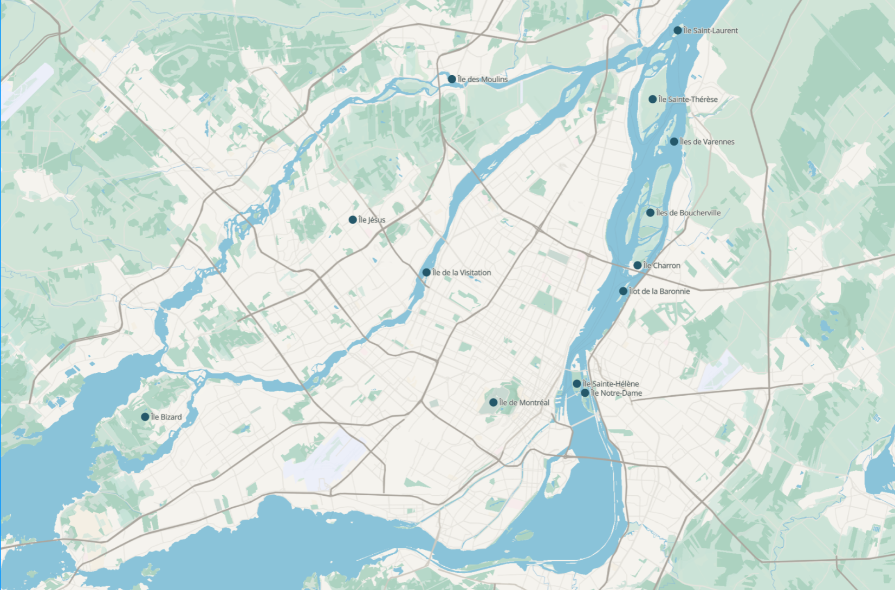
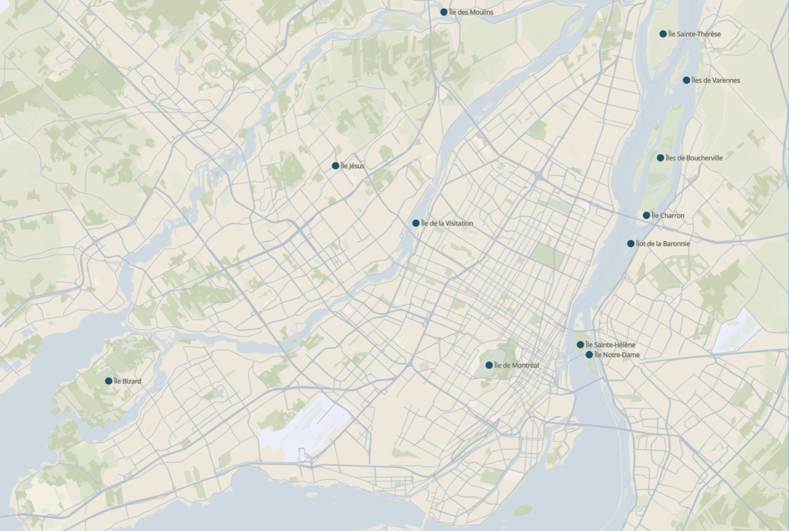
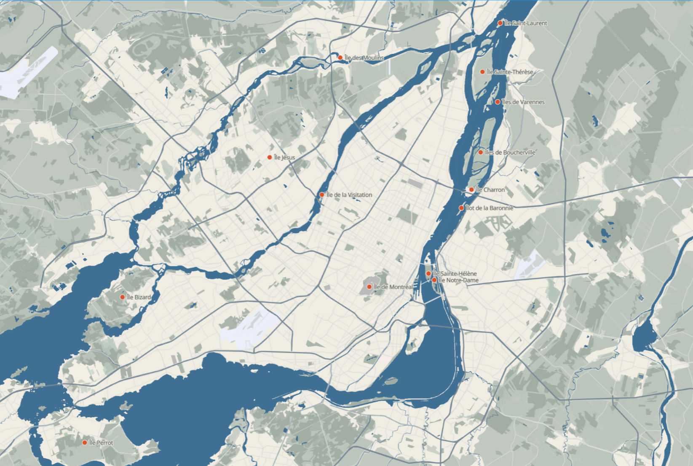
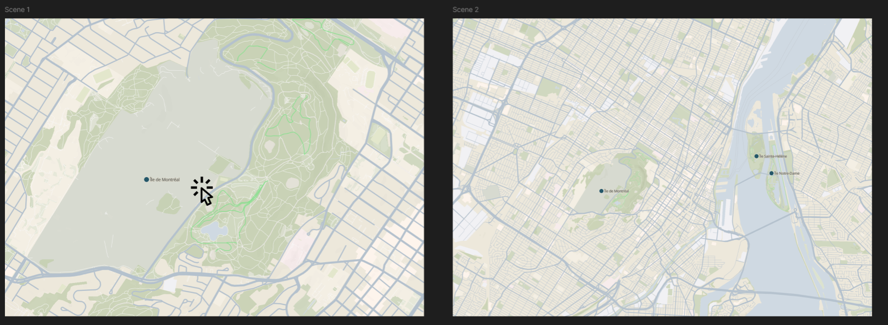
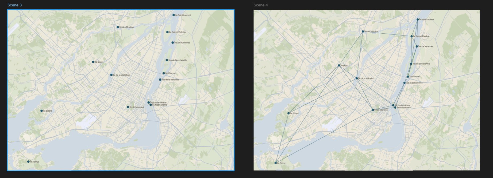
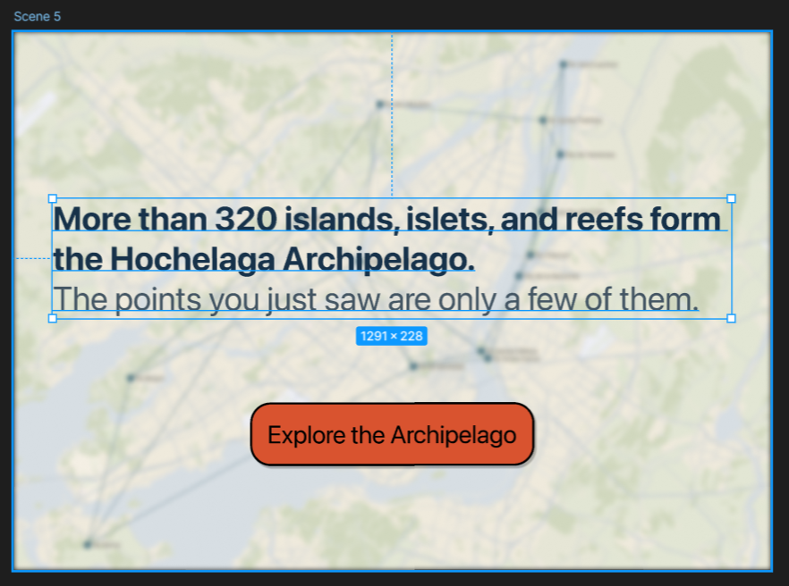
Map Layout and User Flow
For the map layout, I first tried several different ways of organizing the information and showing the relationships between islands. Through these layout explorations, I realized that showing all of the relationships at once would create a very complicated network. The screen could quickly become visually overwhelming, and users might not know where to begin. Because of this, my current idea is to only show the connections related to an island after the user selects it. A small amount of basic information would appear at the same time, allowing the user to focus on one island instead of processing too much information at once. If the user becomes interested in the island, they can continue to an island detail page. This page would provide more detailed information about the island and explain its relationships with other places, natural environments, or topics. In terms of user flow, users can first freely explore different islands on the map. When they click on an island, they will see a short description and its related connections. If they want to learn more, they can continue to the detail page. The detail page would first show the main information about the island. It would also include several related topics or themes. By selecting one of these topics, users could explore more detailed information connected to that subject. My idea is to use this step-by-step structure to support users with different levels of interest. Even if someone does not enter the detail page, they can still get a basic understanding of the relationships between islands through the map. If something catches their attention, they can then choose to explore the content in more depth. At the same time, I want to control how much information appears on the screen at once, so that users are not overloaded with too much content.
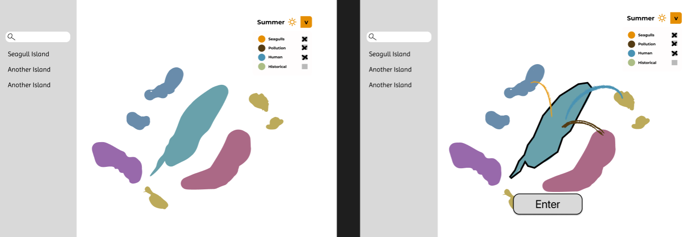
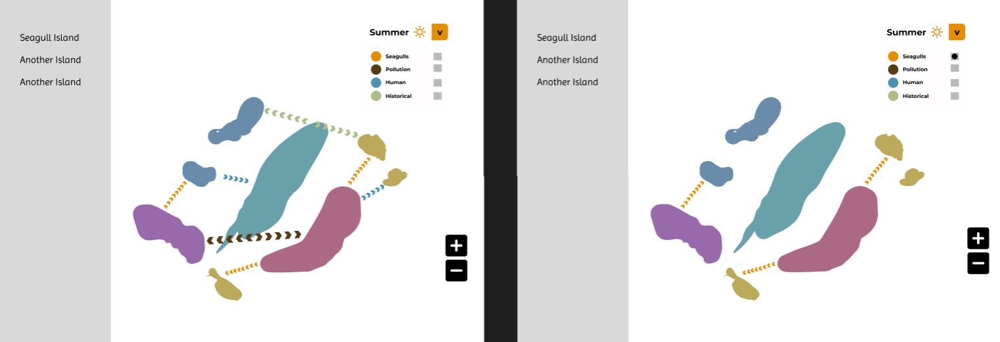
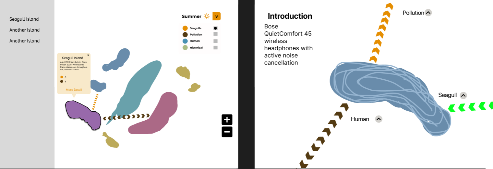
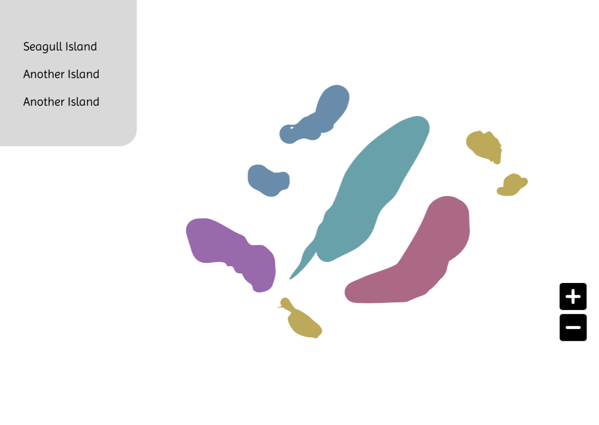
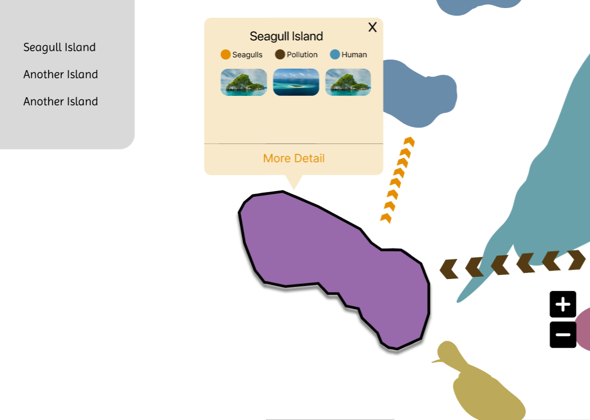
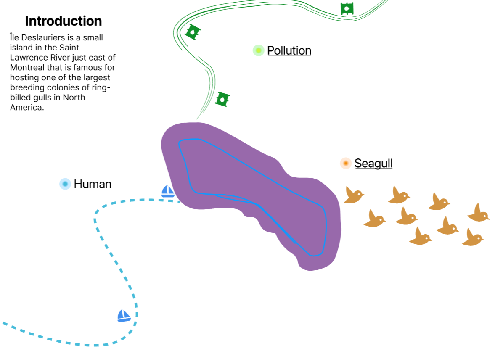
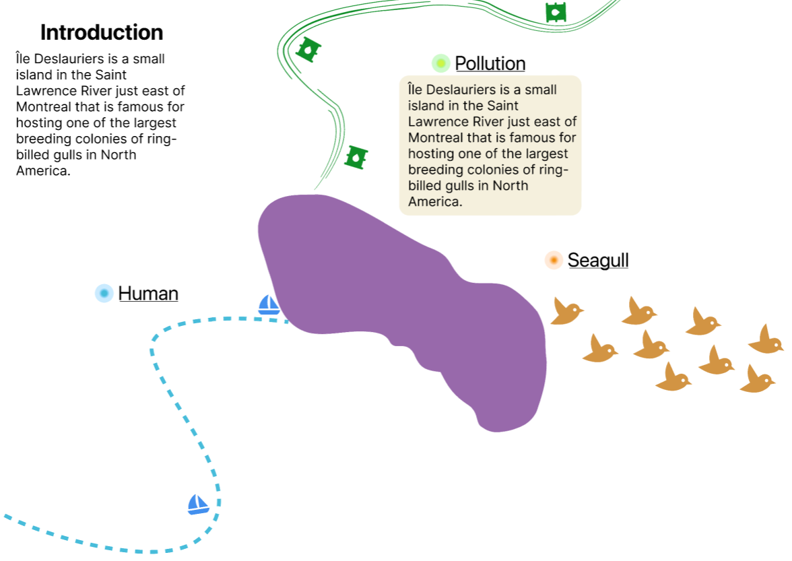
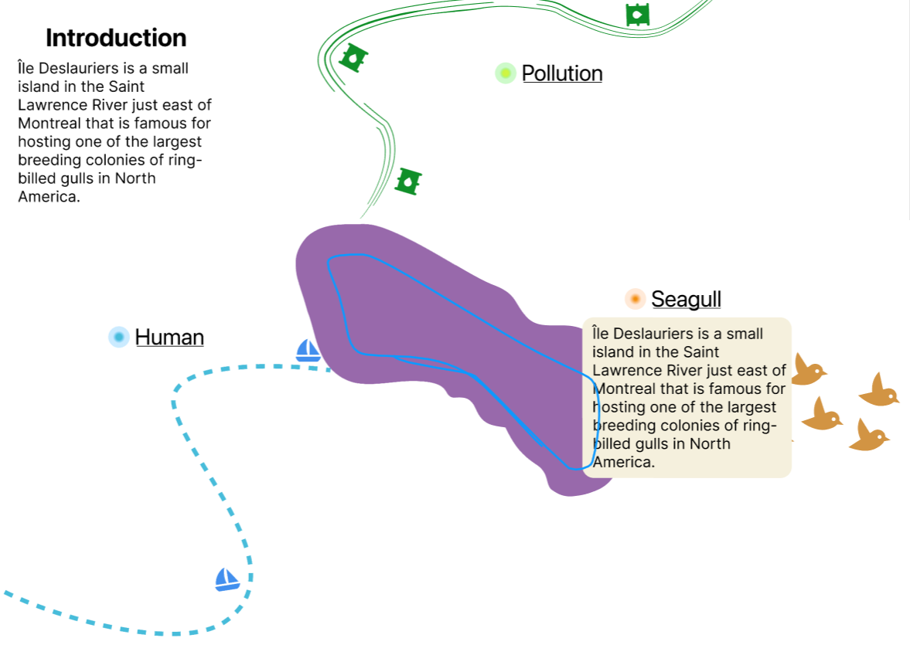
Next Step
My next step is to discuss with my group whether this layout is technically feasible and whether it works well with the overall direction of the project. We also need to decide what kind of visual style would best support the map and make the overall experience feel more engaging and suitable for a museum setting.